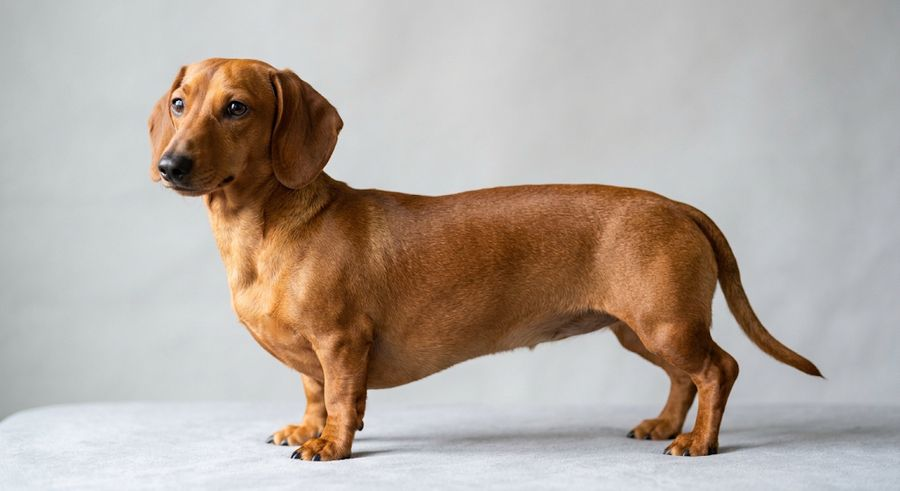

Einstieg · Do Now · Wiederholung der Spielstunde
Das Zuchtbuch
3 Min. · allein1Erkläre, warum das Zuchtbuch allein nicht zeigt, ob die Anlage für langes Fell verloren ist.E–G
Logbuch Seite 4, Feld „Do Now“. Ohne Hilfe und ohne Gespräch. Die Anweisung darf dir jemand vorlesen.
Das sieht man
Das Fell der Tiere: kurz oder lang. Die Zahlen der Würfe.Das sieht man nicht
Was in den Tieren steckt. Ob eine Anlage da ist, die das Fell nicht zeigt.Einstieg · Impuls
Das Foto
2 Min. · Plenum

Beide Fotos sind KI-Bilder.
Einstieg · Fragenentwicklung
Welche Frage stellt sich euch?
3 Min. · Plenum Das fällt uns auf (Logbuch Seite 4, Abschnitt „Impuls und Frage“)Erarbeitung 1 · Hypothesen
Hypothesen formulieren
6 Min. · Paare1Formuliere in Paaren zwei Hypothesen (H1, H2) zu eurer Frage. Gib je eine Vorhersage an: Was passiert, wenn man zwei Welpen aus M2 (Zuchtbuch) verpaart?F
H1Hypothese 1
HypotheseVorhersageH2Hypothese 2
HypotheseVorhersageHypothese = prüfbare Vermutung: „Wenn …, dann …“ · Erweiterung: dritte Hypothese, die ein Ergebnis ausschließt.
Modell M4
Das Modell: Münzen statt Hunde
2 Min. · Plenum1Jeder Welpe bekommt von jedem Elterntier eine Anlage.
2Jedes Elterntier hat zwei Anlagen und gibt davon eine weiter, zufällig.
3Anlage K = kurzes Fell, Anlage l = langes Fell.
4Langes Fell zeigt ein Welpe nur, wenn er zweimal l hat.
Ein Modell ist eine vereinfachte Nachbildung, die man testen kann.
Zwei Münzen = ein Welpe
Kopf = K · Zahl = l
Erarbeitung 2 · Münzwurf
Münzwurf: 20 Welpen
8 Min. · Paare1Leite aus M4 ab, wie viele von 20 Welpen langes Fell haben, und schreibe die Zahl auf, bevor ihr werft. Wirf dann beide Münzen 20-mal. Trage euer Ergebnis an der Tafel ein.F
| Münzen | Strichliste | Anzahl |
|---|---|---|
| K und K | 0 | |
| K und l | 0 | |
| l und K | 0 | |
| l und l (lang) | 0 |
0 geworfen · 0 mit langem Fell · Anteil – · Abstand zur Vorhersage –
Auswertung
Klassenergebnis: Welpen mit langem Fell
4 Min. · Plenum1Vergleiche deine Vorhersage mit deinem Ergebnis und dein Ergebnis mit der Klassensumme (Modell: ≈ 25 %, ≈ 5 von 20).
Auswertung · Mendel
Mendel hat gezählt
2 Min. · PlenumGregor Mendel, Mönch in Brünn, um 1860
•Damals dachte man: Die Merkmale der Eltern mischen sich.
•Mendel kreuzte Erbsen und zählte Tausende Pflanzen.
•Erste Generation: alle Erbsen rund. Zweite Generation: auch runzlige.
•Seine Erklärung: Jede Pflanze hat zwei Anlagen und gibt eine zufällig weiter. Das ist euer Münzmodell.
Auswertung · Stichprobe
Wie viel sagt eine Stichprobe?
2 Min. · PlenumGestrichelte Linie: 25 %, der Erwartungswert des Modells.
1Vergleiche den Anteil bei Mendel mit eurer Klassensumme. Wer liegt näher an 25 %?
Sicherung · Logbuch
Beurteilt das Modell
8 Min. · allein1Beurteile, wo das Münzmodell von einem echten Wurf abweicht. Nenne mindestens zwei Gründe.F–G
Zufall
Warum weichen einzelne Paare von eurer Vorhersage ab?Hilfe: Vergleiche kleinstes und größtes Ergebnis mit 5.
Zahlen
Wie sicher ist ein Ergebnis aus nur 20 Würfen?Hilfe: Vergleiche 20 Welpen mit 1000 Welpen (Folie Stichprobe).
EErweiterung: Nenne, was das Münzmodell weglässt, das bei echten Hunden eine Rolle spielt. Entwickle eine Verbesserung des Modells und beurteile, ob sie sich lohnt.G–H
Im Logbuch gibt es ein Feld für Zufall und kleine Zahlen. Der Merksatz folgt am Stundenende.
Transfer
Welche Hypothese stützt das Ergebnis?
3 Min. · allein1Entscheide, welche Hypothese das Ergebnis der Klasse stützt, und begründe in einem Satz. Satzbaustein: Das Ergebnis stützt H …, weil …F
EBegründe, warum das Münzmodell allein H2 nicht beweist. Prüfe mit der Merkkarte (Logbuch Seite 1): Was folgt daraus? Was folgt daraus nicht? Welche andere Erklärung bleibt?G–H
Merksatz · Reflexion · Ausblick
Im Zuchtlabor erzeugt ihr selbst Daten.
2 Min. · PlenumPassen sie zu unserer Klassensumme? Im Zuchtbuch (Teil 2) stehen 40 Welpen aus solchen Verpaarungen. Das klärt Teil 3 im Spiel.
Spielstand-Code im Logbuch Seite 3 (Feld T1) notiert? Abgabe in der Spielstunde. Hausaufgabe: keine.